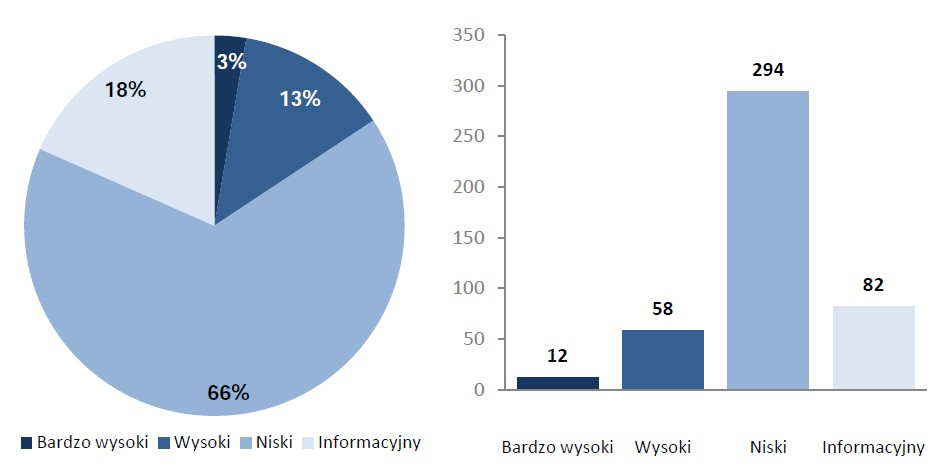

Praca licencjacka
bezpieczeñstwo, aplikacje WWW, PHP, œwiadomoœæ, SQL, JS, luki bezpieczeñstwa, programowanie
W dzisiejszych czasach internet rozwija siê w bardzo dynamicznym tempie, szczególnie w zakresie aplikacji WWW, za którym wiêkszoœæ firm je wytwarzaj¹cych nie jest w stanie nad¹¿yæ. O ile w kwestii wygl¹du, funkcjonalnoœci, czy zwyk³ego UX niesie to tylko ograniczone konsekwencje o tyle w dziedzinie bezpieczeñstwa jest to bardzo kosztowne w d³u¿szej perspektywie czasu. Ci¹gle roœnie iloœæ us³ug udostêpnianych poprzez WWW, a tak¿e ich istotnoœæ dla interesów firm. Drastycznie roœnie ich poziom zaawansowania technologicznego i tempo zmian potrzebnych dla dostosowania ich do potrzeb rynku. Z tych przes³anek wynika coraz wiêksze ryzyko naruszeñ bezpieczeñstwa oraz strat spowodowanych tymi naruszeniami. W raporcie bezpieczeñstwa Rz¹dowego Zespo³u Reagowania na Incydenty Komputerowe CERT.GOV.PL 1 wynika, ¿e a¿ 18% z przebadanych 34 witryn ró¿nych instytucji pañstwowych posiada krytyczn¹ podatnoœæ serwera WWW. Tego typu podatnoœci mog¹ prowadziæ nie tylko do strat finansowych (np. 4 mln z³otych oszacowanych strat w wyniku w³amania do Plus Banku2), ale równie¿ do zagro¿enia bezpieczeñstwa Pañstwa (w przypadku wa¿nych instytucji pañstwowych nawet deface strony mo¿e katastrofalne skutki). Dla przyk³adu atak na infrastrukturê pañstwow¹ Estonii w 2007 roku:
„fala cyberataków na infrastrukturê informatyczn¹ nasila³a siê, unieruchamiaj¹c strony internetowe parlamentu, ministerstw obrony i sprawiedliwoœci, partii politycznych, policji, a nawet szkó³ publicznych. Cyberataki osi¹gnê³y apogeum 9 maja (rosyjski Dzieñ Zwyciêstwa), gdy ich celem sta³ siê te¿ sektor prywatny. Sytuacja zaczê³a przypominaæ powieœæ science fiction: dwa najwiêksze banki, Hansapank i SEB Ühispank, musia³y zawiesiæ us³ugi on-line i wstrzymaæ transakcje zagraniczne. Zamar³a te¿ strona najwiêkszego dziennika „Postimees”.”3
Aspekt bezpieczeñstwa aplikacji WWW jest tylko drobn¹ czêœci¹ tzw. „cyberbezpieczeñstwa”, ale warto siê tym zaj¹æ bo jest czêsto zaniedbywane, a po drugie mo¿e byæ pierwszym krokiem (wektorem) ataku na dane wykorzystywane póŸniej do elewacji dostêpu do reszty infrastruktury. Na przyk³ad opisany w raporcie „Data breach digest”4 atak typu „CMS compromise” s³u¿¹cy do wykradzenia danych autentykacyjnych s³u¿¹cych do kolejnych ataków.
Gdy idea stron WWW powstawa³a w CERN w 1991 roku by³o to ograniczone tylko dla œrodowisk naukowych i nikt nie przejmowa³ siê kwesti¹ bezpieczeñstwa poniewa¿ wszyscy u¿ytkownicy (naukowcy) sobie ufali. Tak wielkiego rozwoju terytorialnego (z pocz¹tku tylko kilka oœrodków naukowych, a wed³ug ITU na rok 2014 dostêp do internetu posiada 2 937 mln ludzi na ca³ym œwiecie5), ani iloœci publikowanych danych (wed³ug CISCO VNI Forecasts w roku 2014 przez internet przep³ywa³o 59,9 EB danych na miesi¹c6) nikt nie przewidywa³ wiêc nikt nie myœla³ wtedy o zabezpieczeniach. Nie istnia³y jeszcze sieci spo³ecznoœciowe, które aktualnie s¹ jednym ze Ÿróde³ zagro¿eñ. Sam protokó³ HTTP jest bezstanowy (tzn. dzia³a w trybie pytanie-odpowiedŸ-porzucenie sesji) ze wzglêdu na zmniejszenie obci¹¿enia serwerów i na pocz¹tkowy brak potrzeby np. identyfikacji u¿ytkownika. Dlatego wszystkie strony by³y statyczny co uniemo¿liwia³o jakiekolwiek próby ataku przez nie (nadal pozostawa³y mo¿liwoœci ataku na sam serwer), a zabezpieczenia tych danych mo¿na by³o ³atwo wykonaæ przez zablokowanie mo¿liwoœci zapisu w ca³ym folderze. Z czasem powsta³y technologie typu klient-serwer jak np. cookies, które przechowuj¹ dane w przegl¹darce klienta, ale s¹ wykorzystywane przez serwer do jego identyfikacji. Przegl¹darki internetowe nie posiada³y ¿adnych mechanizmów bezpieczeñstwa i tylko parsowa³y kod HTML w czysty sposób. Powstawa³y kolejne coraz bardziej rozbudowane standardy HTML które pozwala³y na coraz wiêksz¹ interakcjê z u¿ytkownikami. Formularze danych pozwala³y wys³aæ na serwer u¿ytkownikowi swój tekst, a potem nawet pliki. Kolejnym krokiem by³a mo¿liwoœæ uruchamiania na stronach kodu JS który posiada³ dostêp bezpoœrednio do zasobów u¿ytkownika, czêsto wychodz¹c poza zakres samej przegl¹darki. Wzros³a nie tylko iloœæ kodu Ÿród³owego przez co trudniej jest wychwytywaæ b³êdy, ale te¿ iloœæ wykorzystywanego przez programistów gotowego oprogramowania i bibliotek podczas tworzenia aplikacji WWW.
Dopiero w dalszym etapie rozwoju pojawi³y siê rozbudowane przegl¹darki WWW typu Mosaic (1992 rok) czy Netscape Navigator (1994) daj¹ce ca³e pakiety nowych funkcji które mia³y na celu poszerzaæ interakcjê z u¿ytkownikiem. W 1995 wprowadzono CGI które pozwala³o na uruchomienie po stronie serwera programów i tym samym generowanie dynamicznych stron WWW. Do wsparcia tego systemu zosta³ wprowadzony system zarz¹dzania relacyjnymi bazami danych – MySQL, który u³atwia³ w znacz¹cy sposób przechowywanie i zarz¹dzanie skomplikowanymi strukturami danych. Powsta³a te¿ technologia Javascript która umo¿liwia³a wykonywanie dynamiczne akcje, ale ju¿ po stronie klienta. Rok póŸniej pojawi³a siê technologia Flash z któr¹ by³y wi¹zane du¿e nadzieje ze wzglêdu na spory wachlarz mo¿liwoœci. W 1997 zosta³ wymyœlony standard HTML 3.2 i wprowadzony w przegl¹darce IE 4, a tak¿e najpopularniejszy obecnie jêzyk skryptowy do obs³ugi aplikacji WWW - PHP/FI 2.0. PHP z wersji na wersjê stawa³o siê coraz bardziej popularne wœród WebDeveloperow – ju¿ w roku 2004 20% wszystkich stron dzia³a³o pod kontrol¹ tego jêzyka. Wspó³czeœnie wed³ug Web Technology Surveys jêzyk PHP jest u¿ywany na 82,3% serwerów na ca³ym œwiecie7. Powstawa³y nowe formaty przekazywania danych jak XML (1996 rok) czy JSON (2006 rok) które usprawnia³y komunikacjê.
Sam jêzyk HTML nie dawa³ mo¿liwoœci wykonywania poleceñ przez co by³ sam w sobie bardzo bezpieczny. Ataki mog³y dotyczyæ tylko samych serwerów. Ju¿ w 1995 pojawi³a siê technologia CGI umo¿liwiaj¹ca wykonywanie kodu programu po stronie serwera co pozwala³o na dynamiczne tworzenie wyœwietlanych dokumentów, ale niestety wnios³o nowe zagro¿enia w postaci danych wprowadzanych przez u¿ytkowników stron. Taka mo¿liwoœæ wprowadzania danych do bazy zapocz¹tkowa³a problemy zwi¹zane z zagro¿eniem typu Injection czyli ataku wykorzystuj¹cego lukê w aplikacji polegaj¹c¹ na braku filtrowania (i typowania) danych przekazywanych do zapytañ i zapisów w bazie. Dziêki temu jest mo¿liwoœæ pe³nego dostêpu do bazy przez u¿ytkowników, a nawet usuniêcia bazy (np. DROP DATABASE prace_licencjackie). Kolejnym powszechnie wystêpuj¹cym b³êdem jest te¿ podatnoœæ typu XSS (Cross-site scripting). Pozwala ona na osadzeniu w treœci atakowanej strony niebezpiecznego kodu (najczêœciej JS), który bêdzie wykonywany na komputerach wszystkich odwiedzaj¹cych u¿ytkowników. Mo¿na dziêki tej metodzie wykraœæ ciasteczka u¿ytkownika (np. do póŸniejszego wykorzystania ich we w³amaniu na konta u¿ytkownika) czy inne szkodliwe akcje. Ze wzglêdu na wady mechanizmów bezpieczeñstwa w JavaScript, trudnoœæ rozró¿nienia kodu od znaczników kontroluj¹cych prezentacjê widoku i szeregow¹ strukturê jêzyka HTML tego typu zagro¿enia bardzo czêsto wystêpuj¹ we wspó³czesnych aplikacjach WWW, a poprawa tych luk wymaga du¿ych nak³adów pracy.
Twórcy przegl¹darek bêd¹c jedn¹ z bardziej œwiadomych grup developerskich pod wzglêdem bezpieczeñstwa ca³y czas aktualizuj¹ zabezpieczenia popularnych luk. Odnosi siê to zarówno do zabezpieczeñ typowo po stronie przegl¹darki gdzie dla przyk³adu Internet Explorer 3 pozwala³ wykonaæ na komputerze u¿ytkownika dowolny program z sieci lub wysy³a³ dane takie jak nazwa u¿ytkownika, has³o u¿ytkownika i nazwa grupy roboczej na ¿¹danie dowolnego serwera sieciowego8, ale te¿ zabezpieczeñ samych technologii jak mo¿liwoœæ otwierania nowych okien przez JS czy kontrola dostêpu do ciasteczek. Poprawa w tej kwestii jest te¿ napêdzana siln¹ konkurencja o u¿ytkowników którzy zaczynaj¹ coraz bardziej zwracaæ uwagê na kwestiê bezpieczeñstwa.
Powstaj¹ specjalne protoko³y jak SSL i jego nastêpca TLS odpowiedzialne za szyfrowanie danych przesy³anych za pomoc¹ HTTP. Pozwala ona zabezpieczyæ wszystkie dane u¿ytkownika która s¹ wysy³ane od niego na serwer (np. has³a) oraz powrotem (dane wra¿liwe u¿ytkownika). Mimo d³ugiego czasu istnienia tej metody nie jest ona ci¹gle powszechnie stosowana ze wzglêdów finansowych.
Pojawi³ siê te¿ ca³y wachlarz gotowych rozwi¹zañ programistycznych jakim s¹ gotowe Frameworki do tworzenia aplikacji WWW (np. Zend, Symofony). Maj¹ one wbudowane zabezpieczenia przed popularnymi typami ataku na strony co pozwala programistom skupiæ siê na samej funkcjonalnoœci. Czêsto jest to dobre rozwi¹zanie dla pocz¹tkuj¹cych developerów, poniewa¿ daje to niskiego poziomu, ale jednak jakieœ zabezpieczenia. Oczywiœcie jest te¿ druga strona medalu, która wykazuje wady takiego rozwi¹zania. Przez transparentnoœæ logiki kodu ³atwiej znaleŸæ atakuj¹cym nowe metody w³amania, które zazwyczaj s¹ nie do unikniêcia. Pe³ne zdanie siê na gotowe rozwi¹zania te¿ obni¿a czujnoœæ programistów co prowadzi do sytuacji w której ¿adne odgórne zabezpieczenia nie pomog¹.
W kursach i ksi¹¿kach na temat tworzenia aplikacji WWW ju¿ coraz czêœciej traktuje siê bezpieczeñstwo jako obowi¹zkowy element procesu tworzenia. Na najbardziej popularne sposoby ataku mo¿na znaleŸæ szereg rozwi¹zañ programistycznych. Sam jêzyk PHP w nowszych wersjach blokuje niebezpieczne metody ³¹czenia z baz¹ i wykonywania pytañ wysoce wra¿liwych na ataki typu Injection.
Powstaje wiele firm które specjalizuj¹ siê w testach penetracyjnych czyli metodzie nadzorowanego ataku na aplikacjê WWW w celu wykrycia mo¿liwych luk bezpieczeñstwa które mog³yby byæ wykorzystane w przysz³oœci przez osoby niepo¿¹dane. Zaczyna siê takie testy od wstêpnego badania czyli sprawdzenia kodu w celu znalezienia typowych b³êdów krytycznych umo¿liwiaj¹cych przejêcie kontroli nad systemem. Drugim etapem jest mapowanie aplikacji czyli ustalanie technologii i zapoznawanie siê z logik¹ ca³ego systemu. Ostatnim etapem s¹ typowe ataki które dziêki znajomoœci oprogramowania potrafi¹ wykazaæ wiele luk bezpieczeñstwa o niskiej wykrywalnoœci. Ci¹gle rosn¹ca liczba takich firm na rynku jest dowodem na coraz wiêksze zapotrzebowanie specjalistów z tej dziedziny.
OWSAP (Open Web Application Security Project) to stowarzyszenie które powstawa³o miêdzy innymi w celu poprawy bezpieczeñstwa aplikacji webowych. Grupa profesjonalistów z ca³ego œwiata dzia³aj¹ca non-profit, która stara siê mo¿liwie obiektywnie przekazywaæ informacje na temat praktyk z dziedziny zabezpieczeñ oprogramowania. Przygotowali takie dokumenty jak na przyk³ad „OWASP Guide” opisuj¹cy sposoby projektowania, tworzenia i wdra¿ania systemów bezpieczeñstwa w aplikacjach WWW. Wytyczne traktuj¹ o standardowych lukach typu Injection, ale te¿ o tych nowszych jak CRSF, phishing, karty p³atnicze czy session fixation. Co jest przydatne to praktyczne wskazówki w znanych jêzykach jak ASP.NET czy PHP z gotowymi przyk³adami rozwi¹zañ. Poza dokumentacj¹ wydaj¹ oprogramowanie do testów i pisania oprogramowania. Dla przyk³adu framework XSSer do ³atwego wykrywania luk XSS w pisanych us³ugach webowych.
Statystyka wykrytych podatnoœci w witrynach WWW nale¿¹cych do administracji publicznych,
wed³ug poziomu zagro¿enia
Streszczenie
Wstêp
Wprowadzenie
Rozdzia³ I
Pocz¹tki WWW, brak idei bezpieczeñstwa
Najwa¿niejsze wydarzenia dla Aplikacji WWW
Pierwszy problem z bezpieczeñstwem
Pomys³y poprawy bezpieczeñstwa
Rozdzia³ II
Opracowanie diagramu na podstawie danych
Analiza skutecznoœci wprowadzonych zabezpieczeñ
Œwiadomoœæ œrodowiska programistów na temat bezpieczeñstwa
Aktualny stan bezpieczeñstwa Aplikacji WWW
Zakoñczenie
Bibliografia
Spis treœci
Rosn¹ce zagro¿enia dla aplikacji WWW 1
Keywords 1
Wprowadzenie 1
Rozdzia³ I 2
1. Pocz¹tki WWW, brak idei bezpieczeñstwa 2
2. Najwa¿niejsze wydarzenia dla Aplikacji WWW 2
3. Pierwsze problemy z bezpieczeñstwem 3
4. Pomys³y poprawy bezpieczeñstwa 3
Rozdzia³ II 4
1. Opracowanie diagramu na podstawie danych 4
2. Analiza skutecznoœci wprowadzonych zabezpieczeñ 4
3. Œwiadomoœæ œrodowiska programistów na temat bezpieczeñstwa 4
4. Aktualny stan bezpieczeñstwa Aplikacji WWW 4
Spis treœci (plan) 4
1 Raport o stanie bezpieczeñstwa cyberprzestrzeni RP w 2014 roku, CERT.GOV.PL, http://www.cert.gov.pl/download/3/172/RaportostaniebezpieczenstwacyberprzestrzeniRPw2014roku.pdf (dostêp: 14 kwietnia 2016 r.).
2http://www.bankier.pl/wiadomosc/Policja-zatrzymala-hakera-ktory-wlamal-sie-do-Plus-Banku-7281790.html (dostêp: 13 kwietnia 2016 r.).
3http://www.eesti.pl/dni-ktore-wstrzasnely-estonia-11963.html (dostêp: 14 kwietnia 2016 r.).
4http://www.verizonenterprise.com/resources/reports/rp_data-breach-digest_xg_en.pdf (dostêp: 15 kwietnia 2016 r.).
5International Telecommunication Union https://www.itu.int/en/ITU-D/Statistics/Documents/statistics/2015/ITU_Key_2005-2015_ICT_data.xls (dostêp: 16 kwietnia 2016 r.).
6The Zettabyte Era—Trends and Analysis http://www.cisco.com/c/en/us/solutions/collateral/service-provider/visual-networking-index-vni/VNI_Hyperconnectivity_WP.html (dostêp: 16 kwietnia 2016 r.).
7http://w3techs.com/technologies/overview/programming_language/all (dostêp: 17 kwietnia 2016 r.).
8Ksi¹¿ka „Internet Agresja i Ochrona” str. 305